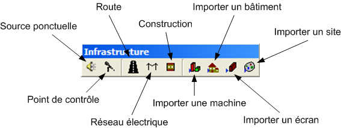

La barre d'outils Infrastructure est active uniquement avec les modeleurs de site ou projet.
Cet outils permet de placer une source acoustique ponctuelle, dite utilisateur, dans le site.
De la même façon que la source, il est possible de placer un point de contrôle (ou récepteur) dans le site.
L'outils Route permet de dessiner une polyligne représentant une route, une fois la route terminée et la touche "Return" entrée, la boîte de dialogue de l'élément permet de définir le trafic et d'autres propriétés acoustiques.
Cet outils permet comme pour la route, de tracer un réseau de transport électrique, ses propriétés électriques peuvent être modifiés.
L'outils Construction permet de dessiner un écran ou un bâtiment constituer d'un seul étage. Pour créer des constructions plus élaborés, il est préférable d'utiliser le modeleur de bâtiment.
Cet outils permet d'ajouter au site une machine existante, pour cela la fenêtre bibliothèque s'affiche et seuls les éléments du type correspondant sont affichés.
Cet outils permet d'ajouter au site un bâtiment existant, pour cela la fenêtre bibliothèque s'affiche et seuls les éléments du type correspondant sont affichés.
Cet outils permet d'ajouter au site un écran existant, pour cela la fenêtre bibliothèque s'affiche et seuls les éléments du type correspondant sont affichés.
Cet outils permet d'ajouter au site un autre site existant, pour cela la fenêtre bibliothèque s'affiche et seuls les éléments du type correspondant sont affichés.